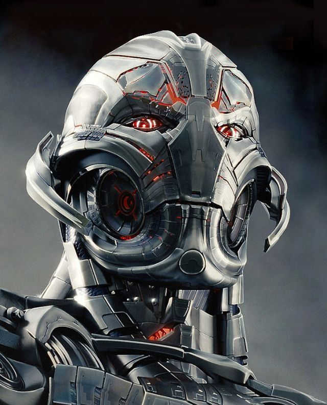
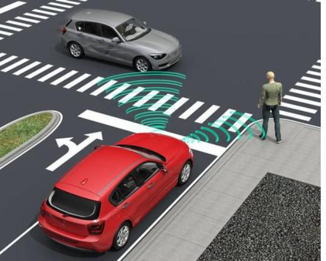
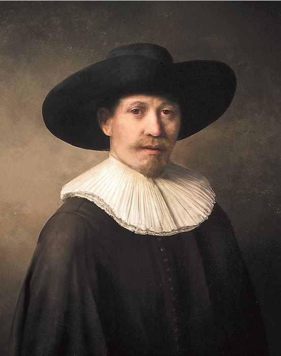

人工智能的应用领域.
医学
近年来，每个人都听说过IBM Watson和DeepMind Health-智能助手，不仅能给医生提供建议，还能找出疾病的遗传倾向。
IBM Watson已经确定并开发了13种恶性肿瘤的治疗计划：包括从宫颈癌到结肠癌。
健身手镯和其他传感器收集数据的远程医疗应用，以及确定患者确切症状和疾病的“调查问卷”，正变得越来越流行。
根据辉瑞公司的最高管理者说，开发一种新药并将其推向市场平均需要12年的时间。
现在，人工智能将使创造分子结构和模拟药物成为可能，这将提高药物的质量并缩短新药的生产时间。
工业
日本、中国、美国、德国和瑞士等国的大型工业公司正在投资新技术。今天的趋势是涉及智力劳动的工作越来越少，而计算机越来越多。
这些工作在未来几十年将受到影响：
- 零件收集: 每天都有越来越多的裁员。机器人通过记忆操作顺序，自行处理部件的连接
- 会计计算: 与人类相比，机器计算数据时不会出错，也不会保留“黑色”和“白色”记帐，这对国家非常有益。超级计算机学习并做出逻辑决策
- 更换顾问: 一个与人相称的机器人，可以与客户进行高层对话，并给出标准问题的回答。由于机器学习和积累经验的能力，通信算法变得更加复杂
教育
很快，教育领域将朝着两个方向快速发展:适应性学习和辅导。
适应性学习旨在解决学生和学生表现不同的问题。人工智能将监控学生的知识水平，并根据其能力调整课程模块的顺序，或告知教师学生对材料的掌握程度。
但这台机器能代替普通教师吗？伦敦大学学院教授罗莎•卢金对此予以否认。她说，找到折衷办法是值得的。毕竟，目标不是用机器取代教师，而是改善教育。人类的老师在这里当然是不可或缺的。
农业
今天，全球农业人工智能市场的密集增长，由于以下因素：数据管理系统的引入、灌溉自动化、通过引入学习方法提高作物生产率以及地球上人口的增加。
机器人技术在农业中的广泛应用体现在以下方面：
- 无人驾驶飞行器: 配备雷达和GPS监测喷洒作物、可靠运送危险化学品和拍摄空中照片的无人机
- 收割机器人: 虽然谷物收割机已经存在很长时间了，但采摘草莓的机器人是最近才发明的
- 除草人工智能: 丹麦奥胡斯大学开发的Hortibot可通过两种方式识别和清除杂草：机械式和现场喷洒除草剂。这个机器人是一个真正的突破，因为从有用的植物中识别杂草是现代农业机器人技术的一个巨大成功。此外，能够识别农作物病虫害的机器也正在研制中
交通
在这一领域实施人工智能的目标是对抗交通堵塞。这些系统已经在欧洲、北美和亚洲的主要城市成功运行。
从交通信号灯收集信息、分析交通密度、交通事故、天气数据和其他造成交通堵塞的因素——这些都是计算机的功能。因此，智能系统在线监控道路，预测交通状况，并据此切换交通灯。
它不仅监视道路上的交通，而且帮助司机。例如，如果需要，系统会调用拖车。这种解决方案无法完全消除交通堵塞，但很有可能将交通速度提高几倍。
也许，如果我们看到无人驾驶汽车的广泛使用，进展将会得到通知。无人驾驶汽车是一种无需人工干预就能移动的车辆。它们由谷歌、AKTIV、特斯拉汽车公司和其他一些公司开发。
生活
当然，每个人都听说过“智能住宅”，它在未来将是人工智能的一个典型例子。最大的制造商是雅马哈、西门子、Abb、贝克霍夫和罗格朗。
这些发展最大限度地简化了人类生活。例如，这样的系统会在早上打开窗帘，叫醒主人，煮咖啡。未来，“智能家居”的功能将扩展到衣柜将自动蒸衣服，冰箱将点菜。这样的解决方案将优化与电力、通风、供暖相关的成本，并根据方便的时间表进行调整。
类人机器人不仅用于家务，也用于交流。铁“朋友”不会让你厌倦而死，有时它会成为家庭的正式成员。
自动翻译
虽然过去的“机器翻译”还有很多不尽如人意的地方，但今天的情况已经发生了巨大的变化。谷歌翻译证明了这一点：该算法基于这样一个事实：计算机感知的不是单个单词，而是一个完整的句子。它允许获得高质量的文本，所以很快，这种方法将成为自动翻译的基础。
AI的未来发展.
趋势一：AI于各行业垂直领域应用具有巨大的潜力
人工智能市场在零售、交通运输和自动化、制造业及农业等各行业垂直领域具有巨大的潜力。而驱动市场的主要因素，是人工智能技术在各种终端用户垂直领域的应用数量不断增加，尤其是改善对终端消费者服务。
当然人工智能市场要起来也受到IT基础设施完善、智能手机及智能穿戴式设备的普及。其中，以自然语言处理（NLP）应用市场占AI市场很大部分。随着自然语言处理的技术不断精进而驱动消费者服务的成长，还有：汽车信息通讯娱乐系统、AI机器人及支持AI的智能手机等领域。
趋势二：AI导入医疗保健行业维持高速成长
由于医疗保健行业大量使用大数据及人工智能，进而精准改善疾病诊断、医疗人员与患者之间人力的不平衡、降低医疗成本、促进跨行业合作关系。
此外AI还广泛应用于临床试验、大型医疗计划、医疗咨询与宣传推广和销售开发。人工智能导入医疗保健行业从2016年到2022年维持很高成长，预计从2016年的6.671亿美元达到2022年的79.888亿美元年均复合增长率为52.68％。
趋势三：AI取代屏幕成为新UI/UX接口
过去从PC到手机时代以来，用户接口都是透过屏幕或键盘来互动。随着智能喇叭（SmartSpeaker）、虚拟/增强现实（VR/AR）与自动驾驶车系统陆续进入人类生活环境，加速在不需要屏幕的情况下，人们也能够很轻松自在与运算系统沟通。
这表示着人工智能透过自然语言处理与机器学习让技术变得更为直观，也变得较易操控，未来将可以取代屏幕在用户接口与用户体验的地位。
人工智能除了在企业后端扮演重要角色外，在技术接口也可承担更复杂角色。例如：使用视觉图形的自动驾驶车，透过人工神经网络以实现实时翻译，也就是说，人工智能让接口变得更为简单且更有智能，也因此设定了未来互动的高标准模式。
趋势四：未来手机芯片一定内建AI运算核心
现阶段主流的ARM架构处理器速度不够快，若要进行大量的图像运算仍嫌不足，所以未来的手机芯片一定会内建AI运算核心。正如，苹果将3D感测技术带入iPhone之后，Android阵营智能手机将在明年跟进导入3D感测相关应用。
趋势五：AI芯片关键在于成功整合软硬件
AI芯片的核心是半导体及算法。AI硬件主要是要求更快指令周期与低功耗，包括GPU、DSP、ASIC、FPGA和神经元芯片，且须与深度学习算法相结合，而成功相结合的关键在于先进的封装技术。
总体来说GPU比FPGA快，而在功率效能方面FPGA比GPU好，所以AI硬件选择就看产品供货商的需求考虑而定。
例如，苹果的FaceID脸部辨识就是3D深度感测芯片加上神经引擎运算功能，整合高达8个组件进行分析，分别是红外线镜头、泛光感应组件、距离传感器、环境光传感器、前端相机、点阵投影器、喇叭与麦克风。苹果强调用户的生物识别数据，包含：指纹或脸部辨识都以加密形式储存在iPhone内部，所以不易被窃取。
趋势六：AI自主学习是终极目标
AI“大脑”变聪明是分阶段进行，从机器学习进化到深度学习，再进化至自主学习。目前，仍处于机器学习及深度学习的阶段，若要达到自主学习需要解决四大关键问题。
首先，是为自主机器打造一个AI平台；还要提供一个能够让自主机器进行自主学习的虚拟环境，必须符合物理法则，碰撞，压力，效果都要与现实世界一样；然后再将AI的“大脑”放到自主机器的框架中；最后建立虚拟世界入口（VR）
目前，NVIDIA推出自主机器处理器Xavier，就在为自主机器的商用和普及做准备工作。
趋势七：最完美的架构是把CPU和GPU（或其他处理器）结合起来
未来，还会推出许多专门的领域所需的超强性能的处理器，但是CPU是通用于各种设备，什么场景都可以适用。所以，最完美的架构是把CPU和GPU(或其他处理器)结合起来。例如，NVIDIA推出CUDA计算架构，将专用功能ASIC与通用编程模型相结合，使开发人员实现多种算法。
趋势八：AR成为AI的眼睛，两者是互补、不可或缺
未来的AI需要AR，未来的AR也需要AI，可以将AR比喻成AI的眼睛。为了机器人学习而创造的在虚拟世界，本身就是虚拟现实。还有，如果要让人进入到虚拟环境去对机器人进行训练，还需要更多其它的技术。
AI对人类的威胁.
关于AI可能对人类的影响，共有两派不同的看法

悲观派
此学派的代表是天文物理学家史蒂芬·霍金(Stephen Hawking)，以及特斯拉CEO伊隆·马斯克(Elon Musk)。霍金认为AI对人类来有很大的威胁，主要有以下理由：
- AI会遵循科技发展的加速度理论。
- AI可能会有自我改造创新的能力。
- AI进步的速度远远超过人类。
- 人类会有被灭绝的危机存在。
乐观派
主要是Google、Facebook等AI的主要技术发展者，他们对AI持乐观看法的理由：
- 人类只要关掉电源就能除掉AI机器人。
- 任何的科技都会有瓶颈，“摩尔定律”到目前也遇到相当的瓶颈。
- AI科技不会无限成长，依然存在许多难以克服的瓶颈。
- 电脑无法突变、苏醒、产生自我意志。
- AI也不可能具有创意与智能、同情心与审美等这方面的能力。
了解更多:
1
2
我们面临挑战.
虽然人工智能是实现社会发展的一项惊人资产，但也带来了重大的伦理问题：
- 我们如何确保算法不侵犯隐私权和数据保密权以及选择自由权和良心自由权等基本人权？
- 如果我们的意愿可预测并受到牵引，我们的行动自由能否得到保障？
- 我们如何确保人工智能编程不会复制社会和文化成见，特别是性别歧视问题？
- 这些“回路”是否会被复制？能否对价值观进行编程？由谁来编程？
- 当决定和行动完全自动化时，我们如何确保落实问责制？
- 我们如何确保世界各地的所有人都可以享受到这些技术的惠益？
- 我们如何确保人工智能以透明的方式开发，以便生活受到影响的全球公民对人工智能的发展有发言权？
有偏见的人工智能
在你常用的搜索引擎中输入“有史以来最伟大的领导者”，很可能你看到的会是一份全球杰出男性人物列表。
你能数得出来有多少位女性人物吗？
以“女生”为关键词搜索图片，页面上显示的女生往往穿着性别特征明显的服饰。而如果输入“男生”，结果大部分是普通男生，没有男人穿着性别特征明显的服饰。
这些是人工智能中性别偏见的例子，它起源于深深植根于我们社会的刻板印象。搜索引擎技术不是中立的，因为它依赖大数据并以点击次数的多少确定优先结果，而这些次数取决于用户的偏好和位置。
因此，搜索引擎就如同一个回声室，不仅重现着现实世界的偏见，并在网络世界里进一步强化。我们如何确保更均衡和准确的结果？我们可以举报有偏见的搜索结果吗？女性在搜索结果中的准确形象是什么样？
在算法的开发过程中，我们应避免性别偏见或至少将其最小化。
自动驾驶汽车

我们每天都会做出道德决策。当一个司机选择踩刹车来避免撞上一个乱穿马路的行人时，他就做出了
将风险从行人身上转移到车内人身上的道德决策。想象一下，一辆刹车失灵的自动驾驶汽车全速驶向
一位老奶奶和一个小朋友。只要稍微偏离一点，就可以救下其中一人。
这一次，做出决定的不是人类，
而是汽车的算法。
你会选择谁?老奶奶还是小朋友？你觉得只有一个正确答案吗？
这是一个典型的伦理困境，它表明了伦理在技术发展中的重要性。

人工智能艺术创作
在伦勃朗去世351年后的2016年，一幅伦勃朗风格的画作
《下一个伦勃朗》经由电脑设计，采用3D打印制作出来。
为了达到这样的技术和艺术实力，该项目对346幅伦勃朗
画作,逐个进行了像素分析，并通过深度学习算法进行升级，
建立了一个独特的数据库。伦勃朗艺术风格的每一个细节
都可以被捕捉到，为创造出这幅前所未有的杰作奠定了算法
基础为了让这幅画栩栩如生，3D打印机在画布上重现了笔触
的质感和颜料的叠加感，以达到骗过所有艺术专家眼睛的
惊人效果。
但谁才是创作者呢？是策划这个项目的公司、
工程师、算法，还是......伦勃朗本人？
人工智能的法律应用
有人认为，人工智能可以帮助建立更加公平的刑事司法系统，它们可以利用其速度优势和摄取大量数据的优势，比人类更好地评估和权衡相关因素。因此，人工智能能根据充分的信息做出不具任何偏见和主观性的决定。
但是有许多伦理挑战存在:
- 人工智能工具缺乏透明度：人类并不总能清楚明了人工智能的决策。
- 人工智能缺乏中立性：基于人工智能的决策很容易出现不准确、带歧视性的结果，以及嵌入或插入式的偏见。
- 数据收集的监督措施和法院相关人员的隐私。
那么，你愿意在法庭上被机器人审判吗？即使我们不确定它是如何得出结论的，你愿意吗？
因此，联合国教科文组织着手制定关于人工智能伦理的全球性规范文书。
世界上的每个人和每个地方都应该参与成为这场讨论。人工智能与每个人都息息相关！
进一步了解人工智能伦理:人工智能伦理的初步研究
COMEST
AI取代我们怎么办？
人工智能会让你失业吗？
这个问题是大家最关心的问题，也是对每一个个体影响最大的问题。
首先，
人工智能替代“部分人类的行为”是必然的趋势。
每一项新技术或者新发明都会替代一部分劳动力：
- 报时间的工作被钟表取代
- 人力车夫被汽车取代
- 抄写员被打印机取代
但是，科技替代的只是某些特定的工作。挖井机只能帮你挖洞，但是无法帮你判断应该在哪里挖洞。人工智能也是如此，它并不是针对某些职业或者某些人，而是替代一些具体的劳动行为。
失业的同时会出现更好的新职业
几次技术革命的历史告诉我们，虽然新技术的出现导致了部分人失业，但是同时也会产生很多新的职业。
被替代的工作往往是低效的，而创造出来的工作往往更高效。想想拉人力车，再想想开汽车。
当人工智能解放了一部分劳动力，这部分劳动力就可以做更有价值，更有意思的事情。
- 人工智能的本质是工具，需要人来用它。
- 人工智能替代的不是人，而是某些工作环节。
所以，千万不要怕人工智能取代自己，你应该主动去学习AI，成为最早会用AI的人，成为能把AI用好的人。
哪些工作会被人工智能替代
Google前副总裁——李开复提出过一个判断依据:
如果一项工作，它做决策的时间在 5 秒钟以内，那么大概率是会别人工智能取代的。
这种工作有4个特点：
- 做决策所需要的信息量不大
- 做决策的过程并不复杂，逻辑简单
- 能独自完成，不需要协作
- 重复性工作
此外，科学家也总结出了3个人工智能很难替代的技能：
- 社交智慧（洞察力、谈判技巧、同理心…）
- 创造力（原创力、艺术审美…）
- 感知和操作能力（手指灵敏度、协调操作能力、应付复杂环境的能力…）
如何迎接智能时代？
人工智能将像工业时代一样，席卷全球。这种情况下，我们要做的不是逃避，而是拥抱这种变化。下面给大家一些具体的建议：
了解智能时代的底层逻辑和基本原理，不需要学习写代码，但是需要知道可能会发生什么，不可能发生什么。
人工智能未来将像电脑一样渗透到各行各业，你要尽量了解人工智能，学习如何利用他解决现有的问题，成为早期使用人工智能的人。
做好职业规划。不要选择三无职业（不需要社交、不需要创造力、不需要强感知和操作能力）
了解更多:
1
2